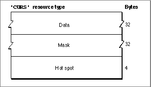

Legacy Document
Important: The information in this document is obsolete and should not be used for new development.
Important: The information in this document is obsolete and should not be used for new development.


The Cursor Resource
You can use a cursor resource to define a cursor to display in your application. A cursor resource is a resource of type'CURS'. All cursor resources must be marked purgeable and must have resource IDs greater than 128. You use theGetCursorfunction (described on page 8-22) to obtain a cursor stored in a'CURS'resource. QuickDraw reads the requested resource, copies it, and then alters the copy before passing it to your application.This section describes the structure of this resource after it has been compiled by the Rez resource compiler, available from APDA. However, you typically use a high-level utility such as the ResEdit application to create
'CURS'resources. You can then use the DeRez decompiler to convert your'CURS'resources into Rez input when necessary.The compiled output format for a
'CURS'resource is illustrated in Figure 8-8.Figure 8-8 Format of a compiled cursor (
'CURS') resource
The compiled version of a'CURS'resource contains the following elements: